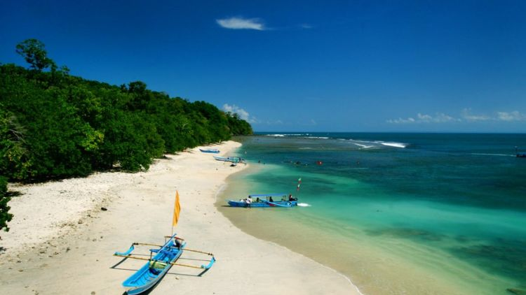
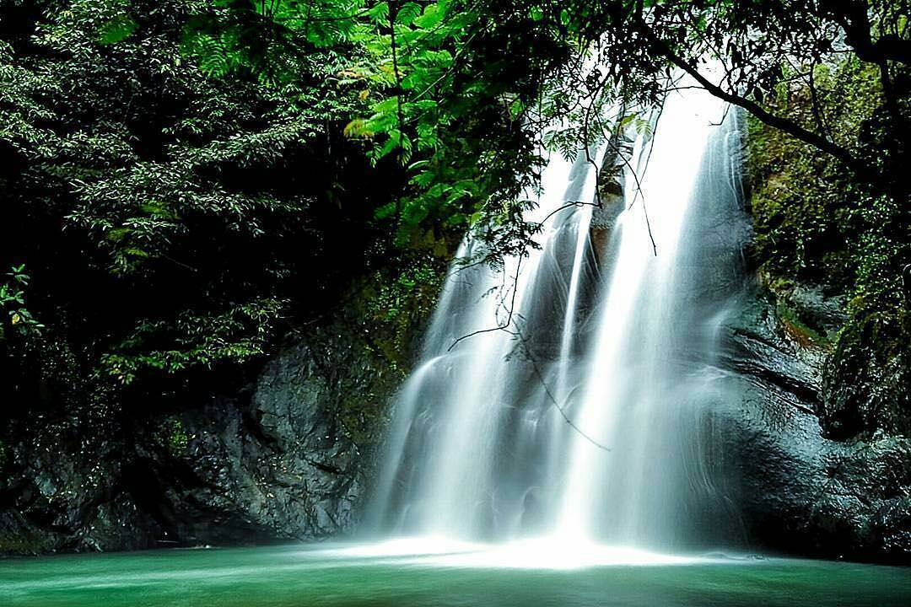
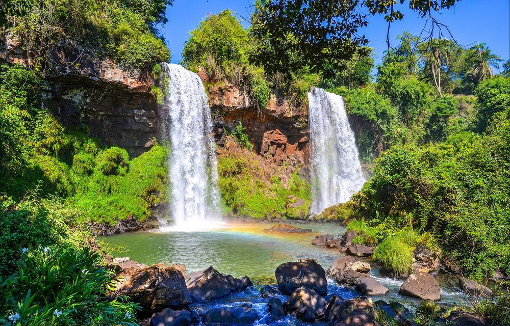
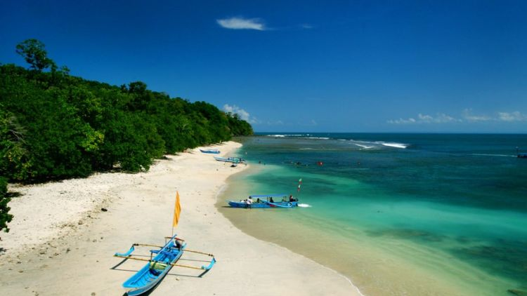
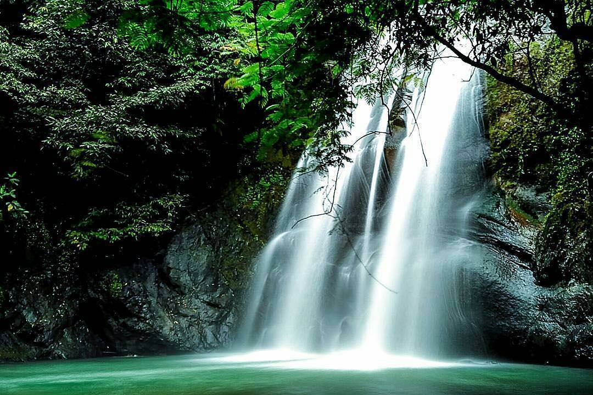
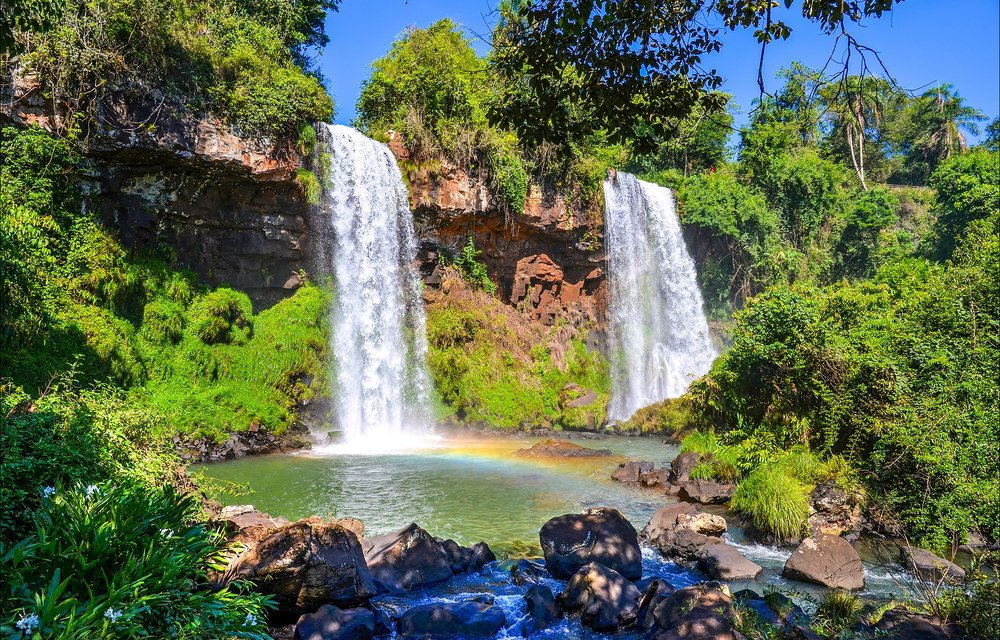

3 Wisata Unik Jawa Barat yang Mirip dengan Destinasi Luar Negeri
Diposting pada 14 Februari 2021
Image
Bukan rahasia lagi kalau Indonesia memiliki sejuta wisata yang memanjakan mata. Salah satu wilayah dengan tempat wisata menarik adalah Jawa Barat. Bahkan, beberapa di antaranya kerap disamakan dengan destinasi di luar negeri, lho.
Pertama. Cocok banget buat short trip, Kawah Putih Ciwidey, Bandung, memang indah banget. Lanskap kawah dengan kabut belerangnya mirip Rotorua Lake di Selandia Baru.
Kedua. Kebun Raya Cibodas, Cianjur, memiliki Taman Sakura, seperti yang ada di Ueno Park, Jepang. Meski jumlahnya tak banyak, tetap saja terlihat indah dan menawan
Ketiga. Green Canyon, Pangandaran, punya vibes seperti sedang berada di Havasu Canyon, Amerika Serikat. Bedanya, kamu bisa susur sungai sampai puas di Green Canyon
 




